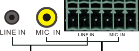

<form enctype="multipart/form-data" id="wmform">
	<table width="753" border="0">
		<tr>
		  <td width="184" height="28">&nbsp;</td>
	      <td align="left" style="padding-left: 20px;"><!--<h5>$audio.input$</5>--></td>
	    </tr>
		<tr>
    		<td style="text-align: center;" colspan="2">
    			<table style="margin-left: 210px;">
    				<tr>
    					<td></td>
						<td rowspan="5" align="center" style="width:240px;padding-left:40px">
							<div class="$image_prex$resetdefault" style="width:240px;padding-left:10px" align="left"><h6>$sysupgrade.note$</h6><font style="font-size:12px;">$audio.notice$</font></div>
						</td>
    				</tr>
    			</table>
		      </td>
    	</tr>
		
		<tr>
			<td style="text-align: right;width:100px">$audio.input$:</td>
			<td style="text-align: center;">
			<table style="margin-left: 65px;">
				<tr>
					<!--
					<td width="55" align="center"><input type="checkbox" name="audio" value="1" /></td>
					-->
					<td width="108" align="left"><input type="checkbox" name="audio" class="lineIn" value="2" /></td>
					<td width="120" align="left"><input type="checkbox" name="audio" class="macIn" value="3" />&nbsp;&nbsp;&nbsp;</td>
					<!--
					<td width="65" align="right"><input type="checkbox" name="audio" value="4" /></td>
					-->
				</tr>
			</table>
			</td>
		</tr>
		
		<tr>
			<td style="text-align: right;width:100px">$audio.ans$:</td>
			<td style="text-align: center;">
			<table style="margin-left: 65px;">
				<tr>
					<td width="108" align="left"><input type="checkbox" name="lineInNs" class="lineInNs" value="2" /></td>
					<td width="60" align="left"><input type="checkbox" name="macInNs" class="macInNs" value="3" />&nbsp;&nbsp;&nbsp;</td>
					<td style="text-align: right;">$audio.ansLevel$</td>
					<td width="120" align="left" >
					<select name="macNsLevel" id="macNsLevel" style="width:$num.audioLevel$;">
						<option value="3">$audio.high$</option>
						<option value="2">$audio.medium$</option>
						<option value="1">$audio.low$</option>
		            </select>
					</td>
				</tr>
		<!--	
				<tr>
					<td width="108" align="left">
					<select name="lineNsLevel" id="lineNsLevel" style="width:$num.audioLevel$;">
						<option value="3">$audio.high$</option>
						<option value="2">$audio.medium$</option>
						<option value="1">$audio.low$</option>
						<option value="0">无</option>
		            </select>
					</td>
					
					<td width="120" align="left" >
					<select name="macNsLevel" id="macNsLevel" style="width:$num.audioLevel$;">
						<option value="3">$audio.high$</option>
						<option value="2">$audio.medium$</option>
						<option value="1">$audio.low$</option>
						<option value="0">无</option>
		            </select>
					</td>
				</tr>
		-->
			</table>
			</td>
		</tr>
		
		<tr>
			<td style="text-align: right;width:100px">$audio.level$:</td>
			<td style="text-align: center;">
			<table style="margin-left: 65px;">
				<tr>
					<td width="108" align="left">
					<select name="lineLevel" id="lineLevel" style="width:$num.audioLevel$;">
						<!--<option value="0">---</option>-->
		                <option value="2">$audio.high$</option>
		                <option value="1">$audio.medium$</option>
		                <option value="0">$audio.low$</option>
		            </select>
					</td>
					
					<td width="120" align="left" >
					<select name="macLevel" id="macLevel" style="width:$num.audioLevel$;">
		                <!--<option value="0">---</option>-->
						<option value="2">$audio.high$</option>
		                <option value="1">$audio.medium$</option>
		                <option value="0">$audio.low$</option>
		            </select>
					</td>
				</tr>
			</table>
			</td>
		</tr>
		
		
		
	    <tr>
	        <td height="45px" colspan="2" style="padding: 20px 0 0 270px;">
	            <input id="saveBtn" class="btn-normal" onmouseover="this.className='btn-hover';" onmouseout="this.className='btn-normal';" type="button" value="$btn.save$" />
	        </td>
	    </tr>
	</table>
</form>
<script>

function initInputs(checkedAutos){
	if(checkedAutos){
		var autos = checkedAutos.split(",");
		if(autos && autos.length > 0){
			var autoCbx = document.getElementsByName("audio");
			for(var i=0; i < autos.length; i++){
				if(parseInt(autos[i]) == 1){
					autoCbx[0].checked = "checked";
				}
				if(parseInt(autos[i]) == 2){
					autoCbx[1].checked = "checked";
				}
			}
		}
	}
}

function lineInChange(){
	var checkLine = jQuery(".lineIn").attr("checked");
	var checkMac = jQuery(".macIn").attr("checked");
	var checkLineNs = jQuery(".lineInNs").attr("checked");
	var checkMacNs = jQuery(".macInNs").attr("checked");
	
	if(checkLine == "checked"){
		jQuery("#lineLevel").attr("disabled",false);
		jQuery(".lineInNs").attr("disabled",false);
//		jQuery("#lineNsLevel").attr("disabled",false);
	}
	else{
		jQuery("#lineLevel").attr("disabled",true);
		jQuery(".lineInNs").attr("disabled",true);
//		jQuery("#lineNsLevel").attr("disabled",true);
	}
	
	if((checkLine == "checked" && checkLineNs == "checked") || (checkMac == "checked" && checkMacNs == "checked"))
		jQuery("#macNsLevel").attr("disabled",false);
	else
		jQuery("#macNsLevel").attr("disabled",true);
}

function macInChange(){
	var checkLine = jQuery(".lineIn").attr("checked");
	var checkMac = jQuery(".macIn").attr("checked");
	var checkLineNs = jQuery(".lineInNs").attr("checked");
	var checkMacNs = jQuery(".macInNs").attr("checked");
	
	if(checkMac == "checked"){
		jQuery("#macLevel").attr("disabled",false);
		jQuery(".macInNs").attr("disabled",false);
//		jQuery("#lineNsLevel").attr("disabled",false);
	}
	else{
		jQuery("#macLevel").attr("disabled",true);
		jQuery(".macInNs").attr("disabled",true);
//		jQuery("#lineNsLevel").attr("disabled",true);
	}
	
	if((checkLine == "checked" && checkLineNs == "checked") || (checkMac == "checked" && checkMacNs == "checked"))
		jQuery("#macNsLevel").attr("disabled",false);
	else
		jQuery("#macNsLevel").attr("disabled",true);
}

function nsChange(){
	var checkLineNs = jQuery(".lineInNs").attr("checked");
	var checkMacNs = jQuery(".macInNs").attr("checked");
	
	if(checkLineNs == "checked" || checkMacNs == "checked")
		jQuery("#macNsLevel").attr("disabled",false);
	else
		jQuery("#macNsLevel").attr("disabled",true);
}

jQuery(function() {
	/*
	 * form validation
	 */
	initFormValidation();
	
	jQuery('#saveBtn').click(function() {
		var check = jQuery("input[name=audio]:checked");
		var macLevel = formSet.getSelectValue('#wmform ', 'macLevel');
		var lineLevel = formSet.getSelectValue('#wmform ', 'lineLevel');
		var macNsLevel = formSet.getSelectValue('#wmform ', 'macNsLevel');
		var lineNsLevel = 0;	 //formSet.getSelectValue('#wmform ', 'lineNsLevel');
		var videoinput = jQuery("input[name=videoinput]:checked").val();
		var macNsCheck = jQuery(".macInNs").attr("checked");
		var lineNsCheck = jQuery(".lineInNs").attr("checked");
		
		var macNsEnable = 0;
		var lineNsEnable = 0;
		
		if(macNsCheck)
			macNsEnable = 1;
		else
			macNsEnable = 0;
			
		if(lineNsCheck)
			lineNsEnable = 1;
		else
			lineNsEnable = 0;
		
		var audio_config;
		var audio_sel = "";
		check.each(function(i){
			audio_sel = audio_sel+','+jQuery(this).val();
		});
		if(audio_sel != ""){
			audio_sel = audio_sel.substring(1,audio_sel.length);
		}
		var data = {"actioncode": "410", "audio": audio_sel, "videoinput": videoinput, "macLevel":macLevel, "lineLevel":lineLevel, "lineNsLevel":lineNsLevel, "macNsLevel":macNsLevel, "macNsEnable":macNsEnable, "lineNsEnable":lineNsEnable};
		jQueryAjaxCmd({
			"data": data,
			success: function(ret) {
				if(ret == 1) {
					alert('$opt.success$');
					jQuery("#menuc").click();
				}
			}
		});
	});
	
	jQuery(".lineIn").bind("click", lineInChange);
	jQuery(".macIn").bind("click", macInChange);
	jQuery(".lineInNs").bind("click", nsChange);
	jQuery(".macInNs").bind("click", nsChange);

});
</script> 
